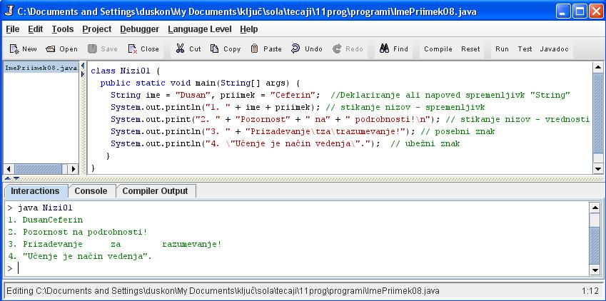

NIZI, STIKANJE NIZOV IN POSEBNI ZNAKI
- Niz je zaporedje znakov med dvema narekovajema. Primer: "Tole je že niz, saj je med dvema narekovajema, sestavljen pa je iz znakov, ki so v te, primeru èrke, loèila in presledki."
- Nize v javi napovemo z besedo String, ki jo moramo pisati z veliko zaèetnico. Primer: String ime = "Dusan";.
- Pri deklaraciji spremenljivke "ime" tipa "niz" smo tej spremenljivki priredili vrednost "Dusan", ki smo jo seveda zapisali med narekovajema.
- String ni tip podatka, kot denimo "byte", "short", "integer", "long" in tako naprej, paè pa je objekt.
- Nize lahko tudi stikamo skupaj v en niz. To storimo z znakom "+".
- Znak "+" pomeni, da izvedemo operacijo nad nizoma. Znak "+" zato imenujemo operator.
- Primer stikanja nizov: "Dusan" + "Ceferin" se spremeni v "DusanCeferin".
- Nekaterih znakov v nizih ne moremo uporabiti, ker imajo svoj pomen in nalogo v programskem jeziku Java.
- Prevajalnik te znake razume kot ukaze pri prevajanju in ne kot znake, ki jih mora prikazati.
- Taka znaka sta denimo " in \. Te znake imenujemo ubežni znaki, v nizu pa jih zapišemo.
- Spet drugi znaki v nizih pa niso namenjeni temu, da jih vidimo v zapisu, torej niso del niza, paè pa navodilo za oblikovanje izpisa.
- Taka znaka sta denimo \t, ki pomeni tabulator, in \n, ki pomeni preskok v novo vrstico.
VAJA 8:
- V okolju za pisanje izvorne kode v jeziku Java, za prevajanje in za interaktivno delo zapiši program "Nizi01". Pomagaj si s sliko.
- Kodo lahko tudi kopiraš iz te datoteke in jo prilepiš v okolje, v katerem pišeš programèke. Pozor: koda, ki jo boš kopiral/a, vsebuje eno, dve, tri ali štiri napake. Èe želiš, da bo program deloval, moraš napake odkriti in jih odpraviti.
- Izvorno kodo shrani pod imenom "ImePriimek08.java". ImePriimek je seveda tvoje lastno ime in priimek.
- Datoteko "ImePriimek08.java" prevedi.
- Prevedeno datoteko zaženi, preveri rezultat v interaktivnem oknu in poklièi profesorja, da vidi rezultat.
1. Vprašanja:
1. Kaj je niz?
2. S katero besedo napovemo v programu ali deklariramo nize?
3. Kako povemo prevajalniku, da želimo stakniti dva niza?
4. Kaj je operator in kateri operator smo spoznali v tej uèni enoti?
5. Zapiši posebne in ubežne znake, ki si jih spoznal/a v tej uèni enoti.
6. Zapiši imena spremenljivk, ki smo jih deklarirali v primeru te uène enote.
7. Zapiši vrednosti spremenljivk, ki smo jih deklarirali v primeru te uène enote.
8. Koliko nizov smo staknili v stavku z zaporedno številko 1, koliko v številki 2,koliko v številki 3 in koliko v številki 4?
9. V katerih od izpisanih stavkov od 1 do 4 nastopajo nizi le kot vrednosti in ne kot spremenljivke?
10. Zapiši številke stavkov, v katerih smo uporabili ubežne znake, ob številki stavka pa zapiši, kateri ubežni znak ta stavek vsebuje.
11. Zapiši številke stavkov, v katerih smo uporabili posebne znake, ob številki stavka pa zapiši, kateri posebni znak ta stavek vsebuje.
12. Zapiši številko stavka, pri katerem smo uporabili drugo metodo oziroma ukaz za izpis. Ta stavek tudi zapiši? Zakaj je izpis tega stavka povsem enak kot pri ostalih stavkih, èeprav bi se moral razlikovati?
2. Zapiši od ene do pet kljuènih besed, ki povzemajo vsebino te uène enote.
3. Povezave do dodatnih informacij.
Gradiva na spletnih straneh fakultete za matematiko in fiziko v Ljubljani.
Spletni priroènik proizvajalca programskega okolja Java. To je podjetje Sun.
|